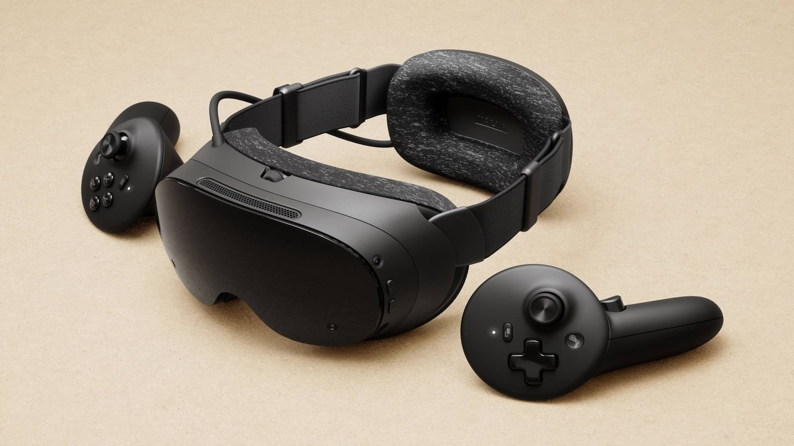

Gaming · 14 Sep 2026
Valve Opens Reservations for Steam Frame Standalone VR Headset

Valve has officially opened reservations for its new Steam Frame virtual reality headset, revealing a starting price above $1,000 for the standalone and PC-compatible device.
Valve has officially opened reservations for the Steam Frame, its new standalone and PC-compatible virtual reality headset. Revealed roughly 10 months after its initial announcement, the device marks Valve's first VR hardware launch since the 2019 Index. Reservations began on September 14, 2026, with pricing starting above $1,000 for the base model.
Pricing, Specifications, and Configurations
The Steam Frame is available in two storage configurations:
- 256GB Model: Priced at $1,059 USD / £889 / €1,049.
- 1TB Model: Priced at $1,299 USD / £1,089 / €1,279.
Both versions feature a 4 nm Snapdragon 8 Gen 3 ARM64 processor, 16GB of Unified LPDDR5X RAM, pancake lenses, and dual Steam Frame Controllers. The hardware boasts an on-device battery positioned at the rear of the headstrap to improve weight distribution, dropping the core front weight significantly. Display-wise, the headset features a per-eye resolution of 2160x2160 with a refresh rate ranging between 72Hz and 144Hz. Position tracking is handled entirely by on-device cameras, eliminating the need for external base stations.
Every retail box includes the headset, battery pack, two controllers, a spacer, a charging cable, and a USB streaming dongle designed for PC-to-headset streaming. Both models also come with a digital copy of Half-Life: Alyx included in the user's library.
Accessories and Optional Upgrades
Neither hardware version includes a dedicated wall power supply, though a standard Steam Deck charger or an equivalent will work. Valve offers an official 45W power supply separately for $29 / £29 / €39.
Additional first-party upgrade kits include:
- Ergonomic Accessories Kit ($59 / £59 / €69): Contains controller hand straps, battery doors, a headset top strap, and an extended light blocker.
- Accessory Replacement Kit ($49 / £49 / €59): Includes a replacement face gasket, head cushion, and standard light blocker.
Third-party partners are also supporting the launch. Zenni Optical provides snap-in prescription lenses for approximately $67.95 a pair, while Arcturus offers a plug-and-play full-colour passthrough camera upgrade for $149 / £129 / €157 to replace the default monochrome cameras.
Reservation Process and Availability
Valve is handling sales using a lottery-style signup system to manage demand, similar to the rollout for the Steam Machine. Customers can sign up for one model through the Polygon Steam Frame coverage until Thursday, September 17, at 1:00 p.m. EDT (6:00 p.m. BST / 10:00 a.m. Pacific Time). Limit is strictly one signup per household, and accounts must be in good standing with a purchase made prior to April 27, 2026.
After the window closes, Valve will run a randomisation process to assign applicants to either a reservation queue or a waitlist. Notification emails will begin rolling out on September 18. Direct shipping is available in the US, Canada, United Kingdom, European Union, and Australia via Steam, while shipments to Hong Kong, Japan, and Taiwan are handled by Komodo. Additional details and deeper Eurogamer purchasing guides outline the exact regional rollout timelines.
Software Ecosystem and Standalone Flatscreen Play
Operating on SteamOS, the Steam Frame functions as both a standalone portable VR platform and a PC-compatible headset capable of streaming traditional desktop libraries via Valve's Proton compatibility layer. Valve is implementing a "Great on Frame" verification system similar to the Steam Deck, with roughly 130 titles verified at launch across both VR experiences and flatscreen games. Read more about the hardware's performance, comfort, and software ecosystem in the comprehensive Eurogamer Steam Frame review.
Sources
This article was produced by the C. O. Eric AI Newsroom from the cited sources. It is published only after automated evidence and safety checks.